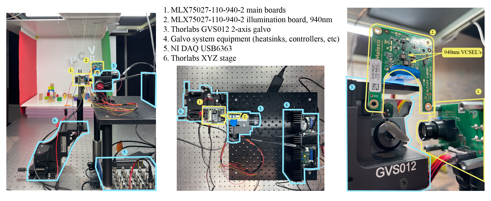
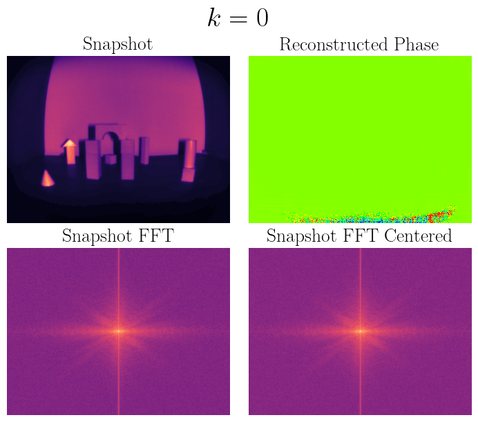
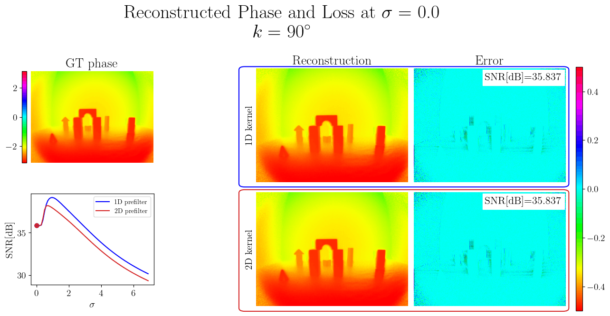

Our hardware prototype.

Changing the phase variation rate, k (rad/line), effects the separation between the ToF hologram and its twin in Fourier space, and thus the reconstruction. Optimal separation occurs at k=2pi/4.

There exists an optimal amount of Gaussian blurring that improves the results of our method. Intuitively, 1D blurring perpendicular to the phase variation direction produces better results than 2D isotropic blurring.